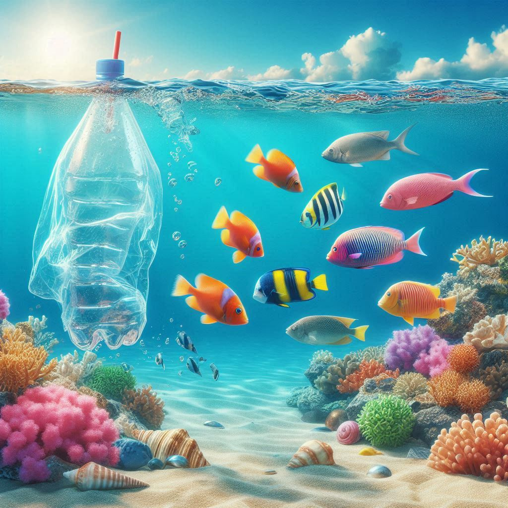
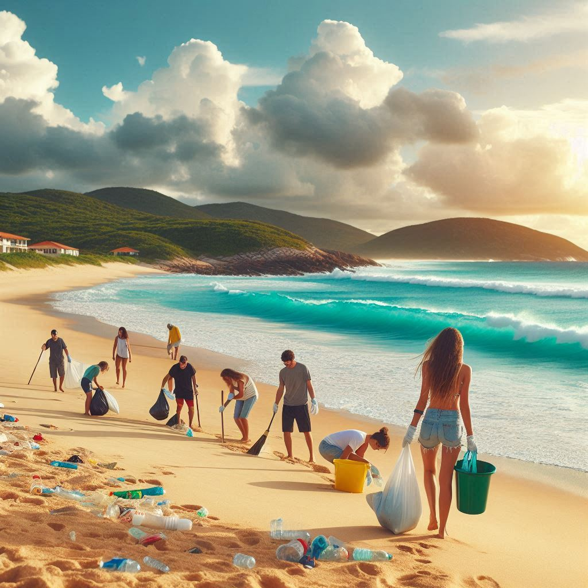
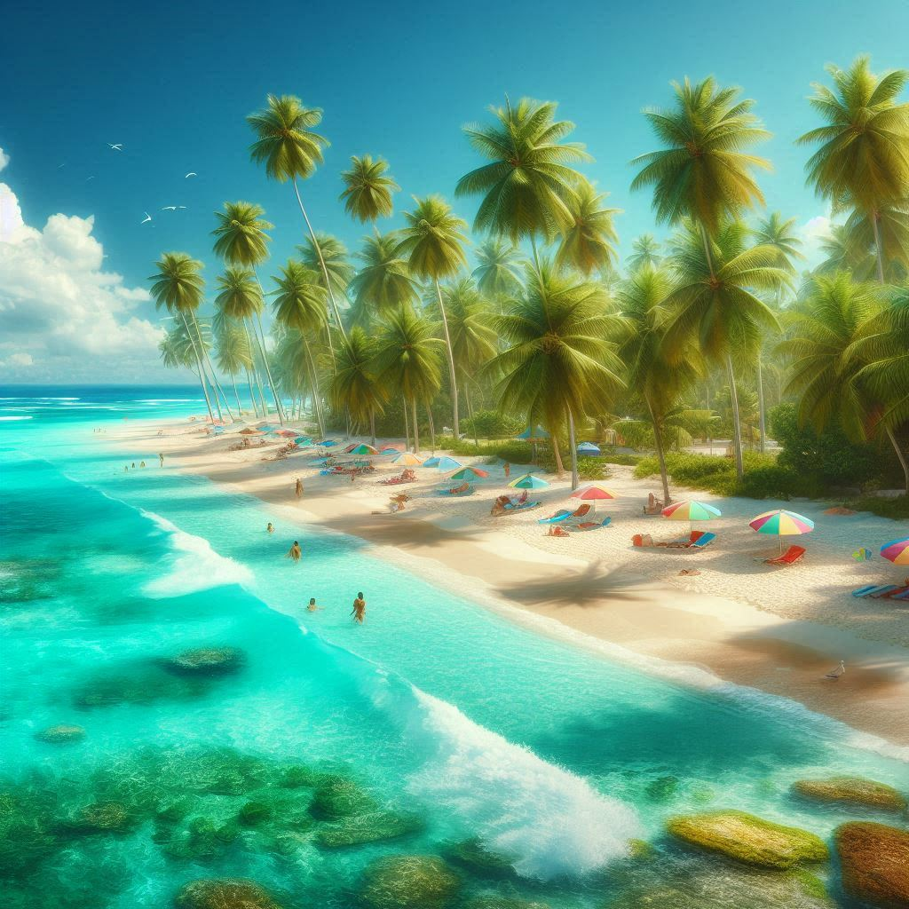
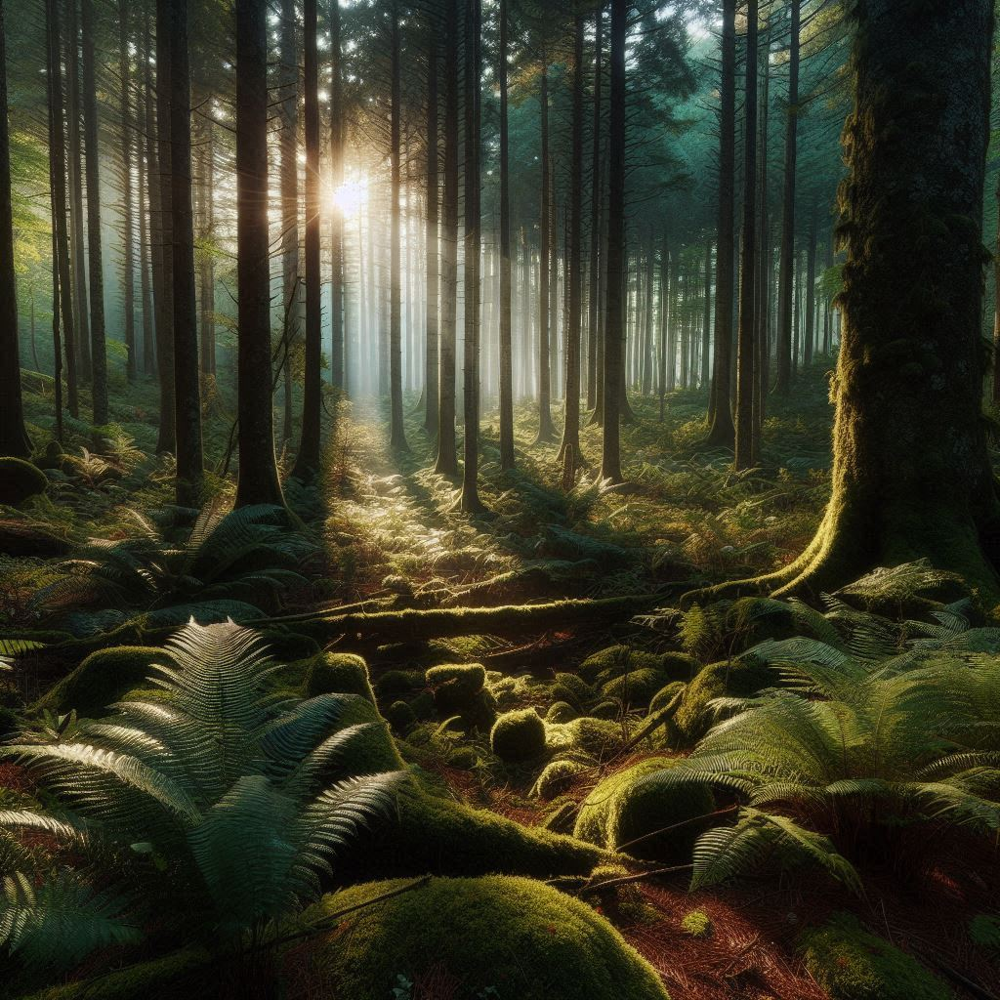

Vamos Juntos Reduzir o Plástico!
Quiz
Curiosidades
Infográfico
Dicas
Quero Fazer o Quiz
Mostrar Resultados
Resultados do Quiz




Impacto do Plástico no Meio Ambiente
Dicas para Reduzir o Plástico
Use garrafas reutilizáveis.
Troque sacolas plásticas por reutilizáveis.
Compre produtos a granel sempre que possível.